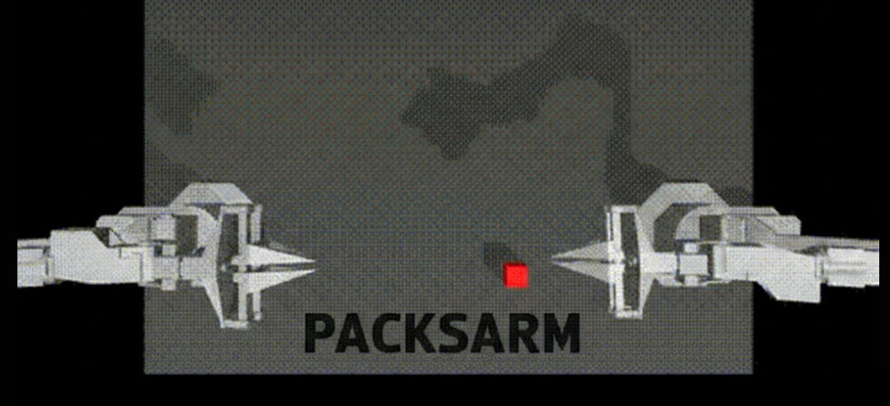

Stage-Aware Reward Modeling for Robot Manipulation
Applied Stage-Aware Reward Models (SARM) and Reward-Aligned Behaviour Cloning (RA-BC) to the ALOHA bimanual cube transfer task using ACT and DiffusionPolicy. With just 50 expert demos and no environment reward, RA-BC gave DiffusionPolicy a 3× boost (8% → 24%) while ACT reached 68% success on its own.
AlohaTransferCube-v0 — a simulated bimanual robot (2 × 6-DOF arms, 14-DOF total) picks up a cube with its right arm and hands it to the left arm. Trained on 50 human expert episodes with RGB cameras + joint states. Success = cube held in left gripper at episode end.
Standard behaviour cloning treats every frame equally. But not all frames are equally useful — some show real progress (grasping, lifting) while others are idle or transitioning.
SARM learns to score each frame by task progress (0 → 1), trained with GPT-4V labeling 5 subtask stages: approach, grasp, lift, transfer, release. RA-BC then uses these scores to weight training samples — frames where the robot makes progress get full weight, stagnant frames get downweighted.
| Config | Steps | Success |
|---|---|---|
| Vanilla DiffusionPolicy | 10K | 8% |
| RA-BC DiffusionPolicy | 10K | 24% |
| Vanilla ACT | 80K | 68% |
| RA-BC ACT | 80K | 62% |
DiffusionPolicy struggles with only 50 demos at 8% baseline, but RA-BC’s frame weighting tripled performance to 24%. ACT reaches 68% on its own — its 100-step action chunks already capture long coherent segments, leaving less room for RA-BC to help.

SARM reward predictions and RA-BC training pipeline